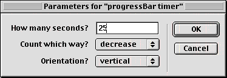

I think the term for what I am trying to do is called a countdown bar
or an energy bar. It will be a graphic which will go down in size as time
elapses. Can you help?
Mike Oscar
Dear Mike,
What you're describing sounds like a progress bar -- similar to what
you see when you're downloading a file or installing a program. The
difference is that you want the progress tied to time (rather than bytes
downloaded) and you want the bar to shrink over time, rather than grow.
You don't mention whether the bar will be horizontal or vertical, so I'll
just create something that works either way.
Let's think about what we want the author (you) to be able to specify
when you drop it on a sprite. Obviously, you'll want to enter the number
of seconds. You want to say whether the bar is oriented horizontally or
vertically. And, although in this instance you want it to shrink, let's
add an option so that the bar can either increase or decrease in size.
Here's what it should look like.

And here's what the final result could look like.
A sample movie is available for download in Mac or
PC
format
So how do we make it work? Everything you're seeing in the demo above
is handled by one behavior, which I'm calling the "progressBar timer".
Here's the concept in a nutshell: as soon as the sprite comes into
existence, it starts a timer. It also checks its own width (or height, if
the bar is vertical). Then, at each frame after that (until the specified
amount of time as elapsed) it calculates how much time has passed as a
percentage of the total time specified. This percentage is then applied to
the original width of the sprite to yeild a graphic representation of the
time.
In our beginSprite handler, we'll need to initialize values for several
properties of the sprite: width, height, and sprite number. We'll also
convert the seconds to ticks (60ths of a second) so that our calculations
will be more precise. We'll then record the starting time (in ticks).
Finally, we need to add this behavior instance to the actorList. What the
heck does that mean?
The actorList is a feature used mostly by people who are doing higher
level object oriented programming. But it's very easy to use, once you
grasp the concept. Here's how it works and why you'd want to use it.
In our example, we want the behavior to update its size every frame. So
we could just use an enterFrame, exitFrame or prepareFrame handler for
that. Right? Well... almost. In actuality, we want the behavior to update
its size every frame... until the full time has elapsed. After the
time has elapsed, there's no need to waste the processor's time by going
through that handler anymore. Alot of times, I use a "flag" property to
act as a switch, but that's a little inefficient because the behavior
still has to check the status of the flag every frame -- even if it is
"off".
Instead, we can use "the actorList". Any object which is contained in
the actorList automatically gets a prompt from Director every frame. The
prompt is called "stepFrame". It's as if on every frame, Director looks in
the actorList. If it sees "Bob" in the actorlist, it says "Hey Bob,
execute that stepFrame handler!".
So, what we'll do is add this behavior to the list in the beginSprite
handler. Then, after the time has elapsed, the behavior will delete itself
from the actorList and it won't get the prompt to stepFrame anymore. The
main guts of our behavior will be executed in the stepFrame handler.
property pSecs, pTotalTicks, pWidth, pHeight, pSprite
property pStartTicks, pDirection, pOrientation
on beginSprite me
pSprite = sprite(me.spriteNum)
pWidth = pSprite.width
pHeight = pSprite.height
pTotalTicks = pSecs * 60
pStartTicks = the timer
add the actorList, me
end beginSprite
on stepFrame me
if the timer > pStartTicks + pTotalTicks then
if pDirection = #increase then
pSprite.width = pWidth
pSprite.height = pHeight
else
pSprite.width = 0
pSprite.height = 0
end if
deleteOne the actorList, me
-- do whatever else you want
beep
else
timeElapsed = the timer - pStartTicks
percentTime = (timeElapsed * 1.0000/pTotalTicks)
if pDirection = #increase then
if pOrientation = #horizontal then
pSprite.width = percentTime * pWidth
else
pSprite.height = percentTime * pHeight
end if
else
if pOrientation = #horizontal then
pSprite.width = pWidth - (percentTime * pWidth)
else
pSprite.height = pHeight - (percentTime * pHeight)
end if
end if
end if
end stepFrame
on endSprite me
deleteOne the actorList, me
end endSprite
on getPropertyDescriptionList me
set pdlist to [:]
myWidth = sprite(the currentSpriteNum).member.width
myHeight = sprite(the currentSpriteNum).member.height
if myHeight > myWidth then
defOrientation = #vertical
else
defOrientation = #horizontal
end if
addprop pdlist, #pSecs, [#comment:"How many seconds?", ¬
#format:#integer, #default:30]
addprop pdlist, #pDirection, [#comment:"Count which way?", ¬
#format:#symbol, #default:#increase, #range:[#increase,#decrease]]
addprop pdlist, #pOrientation, [#comment:"Orientation?", #format:¬
#symbol, #default:defOrientation, #range:[#horizontal,#vertical]]
return pdlist
end getPropertyDescriptionList
The stepFrame handler isn't very complicated. It looks about twice as
long as necessary because I've included the option for the bar to be
oriented vertically. So, for every command to change the size of the bar,
there's an if statement that checks the pOrientation property and then
issues the appropriate command to adjust either the width or height.
The first thing the stepFrame handler does is check to see if the full
time has elapsed. If so, it checks to see if the bar was counting up or
down and then sets the sprite to its full width/height, or to 0. And then
it does something very important: it removes itself from the actorList.
After that, you can insert whatever else you want to happen when time has
elapsed. I've included a "beep" just to show you where to insert your
additional instructions.
If the time has not fully elapsed, then it does the percentage
calculation, comparing ticks elapsed to total ticks specified. This
percentage is then applied to the width/height -- either positively or
negatively (depending on whether it's counting up or down.)
Here's an interesting thing about the actorList. Once you add the
behavior to the actorList, it will remain in existence even if the sprite
goes away. So, if you start this behavior and it gets added to the
actorList, it will persist even if you move to another place in the score
-- or ever to another movie. That could screw you up if you didn't realize
what was happening. Therefore, I've included the endSprite handler that
deletes it from the actorList.
One final thing to note is the getPropertyDescriptionList handler. For
pOrientation and pDirection, I wanted to have 2 specific choices. For
example, the orientation can only be either horizontal or vertical, and
it's great to have these choices on a pulldown menu. To do that, specify a
#range as a list [#horizontal, #vertical]. I went one step further. I
wanted the behavior to be smart enough to guess whether the orientation
should be vertical or horizontal. So, instead of specifying one or the
other as the default, I used a variable called defOrientation.
The first few lines of the gpdl handler compare the width and height of
the member in the current sprite. If height is more than width, then it
guesses that the defOrientation should be #vertical. Otherwise, it's
#horizontal. Try this feature for yourself by dropping the behavior first
onto a wide sprite, then onto a tall one. The default in the dialog box
will know which way to go -- though you can override it, of course.
One last note. In my demo, the horizontal bars are "anchored" to the
left side, and the vertical bars are locked to the bottom of the range.
You can change this by resetting the regPoint of the cast member. In the
demo above, the horizontal cast member has a regPoint of point(0,0) -- top
left. The vertical members have a regPoint set to the bottom left corner.
Play with the regPoint to come up with variations which meet your needs.
Good luck with your project.
Send your questions to the Handyman. Questions will be
selected on the basis of general applicability. For prompt replies to
specific questions, post your inquiries in the Help Central section of DOUG.